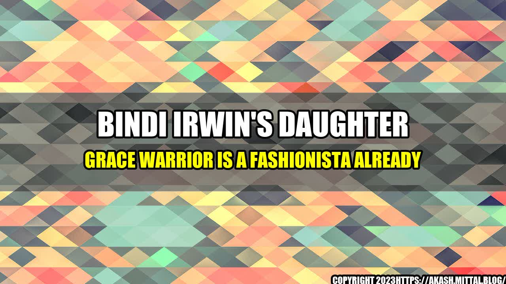

Bindi Irwin's Daughter Grace Warrior Is a Fashionista Already

Bindi Irwin's daughter Grace Warrior may only be a few months old, but she's already making waves in the fashion world. Bindi, who is known for her eco-friendly and sustainable fashion choices, has been sharing photos of her little fashionista on social media.
- Grace has already worn clothing made from sustainable fabrics like organic cotton and bamboo.
- Bindi's recent Instagram post featuring Grace and her husband Chandler Powell in matching khaki outfits received over 600,000 likes and over 3,000 comments.
- Bindi and Chandler have made a conscious effort to dress Grace in gender-neutral clothing, which has been praised by fans.
Practical Tips
If you want to follow in Bindi's footsteps and make sustainable fashion choices for your little one, here are some practical tips:
- Look for clothing made from organic cotton, bamboo, hemp, or recycled fabrics.
- Choose gender-neutral clothing if possible, which can be passed down to younger siblings or other children.
- Consider buying second-hand or swapping clothes with other parents to reduce waste.
- Donate or recycle clothing that no longer fits your child.
Conclusion
Bindi Irwin's daughter Grace Warrior is already making a positive impact in the fashion world by wearing sustainable clothing and promoting gender-neutral fashion. By following Bindi's lead and making eco-friendly fashion choices for our own children, we can help reduce waste and protect the planet for future generations.
- Follow this link to learn more about sustainable fashion: https://www.globalfashionagenda.com/circular-fashion-for-the-masses/
- Use these hashtags to join the conversation:
Article Category: Fashion & Sustainability
Curated by Team Akash.Mittal.Blog
Share on Twitter Share on LinkedIn